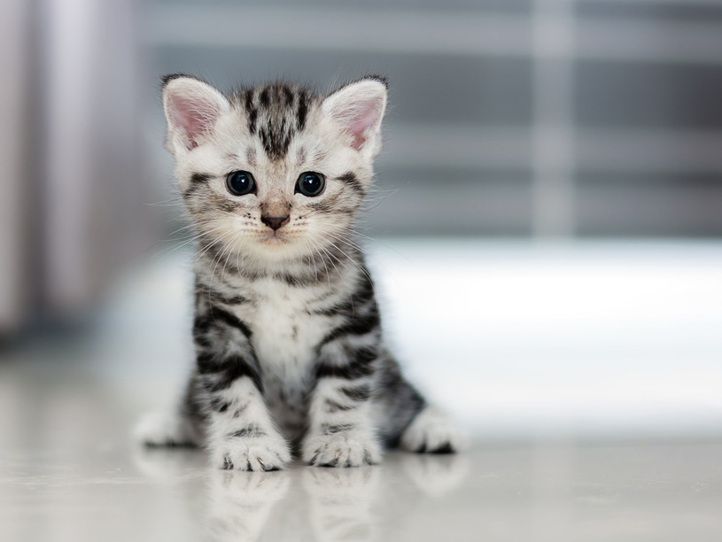

udomowiony gatunek ssaka z rzędu drapieżnych z rodziny kotowatych. Koty zostały udomowione około 9500 lat temu i są obecnie najpopularniejszymi zwierzętami domowymi na świecie. Gatunek ten prawdopodobnie pochodzi od kota nubijskiego, przy czym w Europie krzyżował się ze żbikiem. Felinoterapia to metoda leczenia, która wykorzystuje obecność kota lub kotów do łagodzenia objawów różnorodnych chorób. Przebywanie z mruczącymi zwierzętami wpływa pozytywnie m.in. na terapię dzieci ze stwierdzoną nadpobudliwością ruchową oraz ze spektrum autyzmu. Bez opieki człowieka szybko dziczeje. Koty domowe mają bardzo różne ubarwienie sierści. Ma smukłe ciało, okrągłą głowę, stojące uszy i duze widzące w ciemności oczy. Kończyny przednie są pięciopalczaste, tylne - czteropalczaste, wszystkie zakończone ostrymi pazurami, które kot może chować.